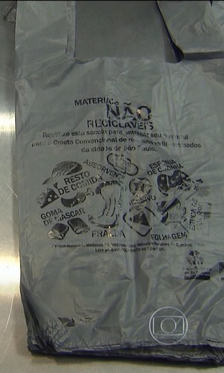

Segundo o secretário Simão Pedro (Serviços), também estão sendo preparados novos modelos de sacolas nas cores marrom e cinza, adequadas ao descarte de lixo orgânico para compostagem e de inservíveis, resíduos que não podem ser reciclados.
Vantagens:
- Facilita o manejo nos aterros
- Menos nocivas ao meio ambiente
- Distribuição gratuita